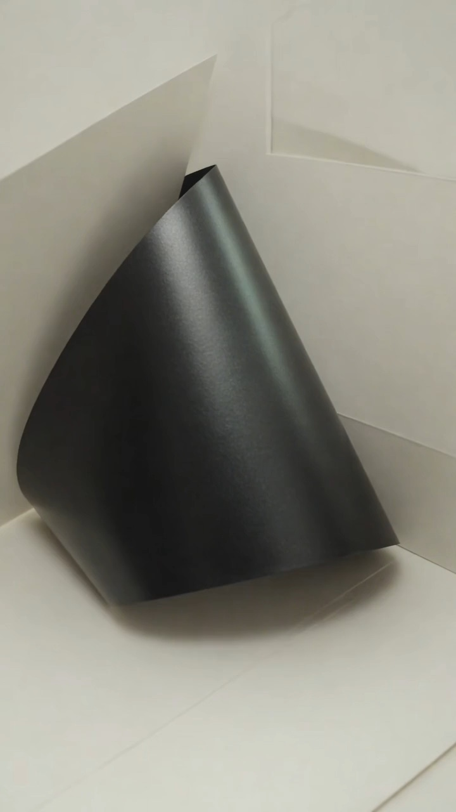

Green in Silver

A visual study from the accompanying video; an interpretation, not a reconstruction of the original observation.1. The Highlight
A dark hall, the only light coming from the lamps, and on the black support of a treadmill lies a highlight. An eye accustomed to paint meets it with a ready answer, one that contains white, a little grey and cold silver. The palette assembles itself in a second, before any question, and for that second the highlight seems fully accounted for.
Then green comes through in the silver. In the scene itself, as far as one can judge, nothing changes; there remain the same lamps, the same support, the same highlight in the same place. A faint greenish tone lies within the reflection and, to all appearances, lay there earlier too, while the eye was content with white and grey.
The green itself concerns us here less than the second before it. The eyes were looking straight at the object, and yet what was in front of them remained invisible. What was that second occupied with, and what was looking in it instead of the eyes? Edmund Husserl, the founder of phenomenology, gave his whole life to questions of this kind, and his vocabulary fits this highlight with unexpected precision. It fits something larger as well. In the same way, to all appearances, a person sees the whole of their reality, people, events and themselves, and the highlight on the support is convenient because on it this way of seeing can be caught at work.
2. Knowledge Before the Gaze
The natural attitude (natürliche Einstellung) in Husserl is our ordinary directedness towards the world, whose existence is taken as a matter of course. In the case described, the habit of recognition is added to it: the world seems already sorted and labelled. Someone entering the hall sees a treadmill, a support, a highlight upon it. They do not have to assemble these from patches of light; they arrive ready-made, with names and purposes.
This is an enormous convenience, and it cannot be called an error. Thanks to it we recognise an object in any light and from any angle, and do not discover the chair anew each time we wish to sit down. But recognition is economical, and that is its price. Having recognised a thing, consciousness stops examining it, because there seems to be no further reason to examine. A black support, a light highlight upon it; the report is issued, the case is closed, and in that report no box was found for the greenish tone.
The same order holds far beyond the limits of sight. A familiar person enters the room already recognised, with their character, their history and what is to be expected of them. A street walked for years has long ceased to be visible and has become a route. Even one’s own day arrives marked out in advance into the important and the empty. The reality in which a person lives consists in enormous measure of such issued reports, and without them not a single step could be taken in it.
Husserl’s second word, intentionality, helps to describe how a thing comes to be meaningful for us. It has nothing to do with intention in the everyday sense. It means that consciousness is always consciousness of something, that it is directed towards a thing and takes it in some definite sense. In every such act Husserl distinguished 2 sides. Noesis is the experiencing itself, that is, the looking, the doubting, the peering. Noema is the object as it is given in that experiencing, together with the sense bestowed upon it. The support remained one and the same; what changed was what it was taken as. At first it was given as “black with a light patch”, and this sense arrived first, before the shades, so that in that second the eye served under it as a subordinate and merely confirmed a decision already handed down.
Husserl did not claim, for all that, that we see our own representations instead of the world. To describe this experience one need not settle the whole question of the world’s independent existence. The point is that a thing discloses itself to us each time in a definite way, while the way itself remains unnoticed, like the glass in a window until light falls upon it.
With people and events the same happens as with the support. A person is never given to us in general; each time they are taken in some capacity, as a superior, as a neighbour, as an offender, as the one who once helped. Suppose it was decided long ago that someone is a difficult person. From that minute their every word arrives already coloured, and sight, hearing and memory serve under that decision as obediently as the eye served under “black with a light patch”. We deal with the person in the sense that has been bestowed upon them, and readily take that sense for the person themselves.
3. Brackets
For working with this unnoticed glass Husserl had a method with a Greek name, epoché (ἐποχή), abstention from judgement. He himself also called it bracketing. It is often retold as advice to forget everything one knows, and that retelling is wrong. Nothing needs to be forgotten, nor could it be, for it is known that this is a support, that it is black and holds up the treadmill. In artistic work one can place the habitual description in brackets: keep the knowledge, but for a time not allow it to answer the question of what is seen here. This is a limited artistic analogy. The Husserlian epoché concerns the natural positing of the world itself and opens a far wider philosophical question.
Once this is done, the “black support with a white highlight” falls apart. In its place is a field in which the silvery passes into the greenish, the greenish dies away into grey, and the black itself ceases to be one colour and disperses into a multitude of dark tones. The object goes nowhere; the support remains a support. Only the question changes, and instead of “what is this?” another is heard: how does it appear now?
Husserl has an observation that might have been written for painters. The colour of a thing, he says, is never given to us whole and at once. It appears in adumbrations (Abschattungen), in a continuous succession of aspects that depends on the light, the distance, the turn of the head. We call black a support that does not look the same at any one of its points. Everyday sight slips through the adumbrations to the thing itself, and is right to do so, because it needs the thing. The artist is engaged in the opposite labour and lingers on what others pass through. Philosophical inquiry goes further and brackets the natural positing of the world itself. Painterly scrutiny resembles one gesture of this turn, but does not in itself make the artist a practitioner of the transcendental reduction.
A person is given to us in adumbrations even more evidently than a colour. They are seen in one mood, in one role, under one lighting of circumstances, at work, in a quarrel, in weariness, and none of these aspects is the whole of them. Everyday life here too slips through the adumbrations to the ready-made name. Brackets are possible here as well. Our knowledge of the person stays with us, no one demands that we doubt it, but for a time it is forbidden to answer before the person themselves has had time to say or do something.
One reservation is best made at once. Brackets do not reveal a true colour purified of conditions. The green in the highlight depended on the lamps, on the angle and on an eye grown used to the half-dark just as much as the silver did. In place of a poor description a fuller one arises, and that is all. But it is precisely the difference between them that shows how much the first left out.
4. Horizon
Where, then, was the green while it went unseen? One may try to describe this through the Husserlian concept of horizon. By horizon he meant everything that is implied in the perception of a thing though not directly given. Every thing comes to us together with what cannot at present be seen in it. Looking at a cup, we see one side of it, yet perceive a whole cup, with its far side, with the hollow within, with its weight in the hand. Colour has such a horizon too. Every tone that is seen promises that it can be examined more exactly, and this promise belongs to the thing itself.
The greenish tone was such a promise, for the time being unfulfilled. It entered into what was called silver as a note one does not hear separately enters into a chord. Then attention shifted, and the note sounded on its own. That it was physically in the reflection the whole time, and in unchanged form, cannot be proved. For the phenomenologist something else matters: the visual experience proved richer than the sense with which it had been overlaid.
With another person the horizon is constituted more radically still. One can walk right round the support, one can turn the cup over, and the hidden side becomes visible. Another’s inner life cannot be walked round. In the Cartesian Meditations, a late work that grew out of the Paris lectures of 1929, the Fifth Meditation is given over entirely to the other person. Husserl describes there how another’s consciousness is never given to us directly; it is only co-present in what we see, in a face, a gesture, a voice. So a person always retains a side that no turning will disclose, and any knowledge of them is knowledge with a horizon that cannot be exhausted.
Where did that first sense come from, that instantaneous palette of white and grey? No one chose it. It formed of itself, before any reflection, along a chain in which highlight means light and light means white. Husserl gave the name passive synthesis to the work that consciousness performs before our judgements and without our participation, binding like to like and the new to the habitual. It is called passive because this work requires no separate deliberate act of our “I”. What is meant is not a process outside consciousness, but the binding of experience prior to active judgement. It seems to us that we first see and then judge. In fact the gaze never arrives at an empty place. Habit meets it at the threshold, and what is seen settles into a form already prepared.
The same synthesis is at work in every encounter with the new. The stranger has not yet finished their first sentence, and already they remind one of someone, are already assigned to a known type, already arouse a trust or a wariness that no one chose. The event is not yet over, and already it has been understood as good fortune or as a threat. A first impression of a person is that same instantaneous palette of white and grey, and it forms by the same path, out of the sediment of earlier experience.
That is why the green arrives by a strange route. As the observer experiences it, the scene remains the same. This is not a measurement of the light’s constancy: the lighting, the angle and the adaptation of the eye may have had a part in the change of perception. A too-early determination is removed, and beneath it is found what it had been screening. The first determination was not false; the silver in the highlight really was there. It was hasty, and the hasty almost always takes itself for the complete.
In human affairs this distinction weighs more than in painting. One can see the circumstances truly, know the individual facts truly, describe a person truly, and yet fail to notice an essential part of what is happening. There is no error here; every word of the description is true. There is only the speed with which the whole was named before it was examined, and the assurance with which the named took the place of the seen. The likeness between sight and judgement of people remains a likeness; it cannot be counted a strict identity. But the gesture is one and the same, and it is recognised unmistakably.
5. The Time of the Gaze
There is an order in this observation, and it is essential. First the silvery, then the green. The gaze lasted, and what happened at its end would have been impossible without its beginning.
Husserl thought about the time of consciousness through the example of a melody. In each of its instants he distinguished 3 layers. There is the primal impression, that is, the note sounding now. There is retention, the holding of the note that has just died away. There is protention, the presentiment of the note about to come. Without them we would hear separate sounds and never a melody. The present, so described, turns out to be broad; it carries within itself its own recent trace.
When the green came through, the silvery did not vanish. It was held alongside, and a comparison became possible. This had been seen as silver, although there was green here too. The second moment of the gaze allowed the first to be understood differently. The highlight, perhaps, remained as before, but the understanding of what had just been lived through changed. The past experience was not rewritten: rather, the incompleteness of the earlier description came into view.
In life among people this movement is familiar to everyone. One late act, one word spoken years afterwards, can make one reread a whole acquaintance from the beginning. The earlier meetings remain the same, not a single detail in them changes, and yet they now mean something else. One’s own past is reread in the same way. The events in it stand motionless, while the understanding of them goes on moving, and what was once called a failure or an accident in time receives another name.
The past does not change; meaning moves. The outward situation seems unaltered, while its understanding unfolds in time: a later phase allows an earlier one to be understood differently. It turns out that the simplest gaze has a history, with its own beginning, turn and revision.
6. The Third Thing
What happened might be explained by saying that a person divides everything into parts and so loses the totality. The highlight suggests something else, almost the reverse. Consciousness grasps the whole superbly, the face before the lines, the wood before the trees, the melody before the notes. The difficulty begins when the grasped whole becomes so habitual that it locks away its own parts. We know that a face is before us, and miss the expression. We know that the surface is black, and miss the green.
Hence the double movement that painting demands of the one who paints. First the tone must be freed from the power of the whole and examined separately. Then it must be returned, because colour lives only in relations, and paint impeccably matched on the palette suddenly proves alien on the canvas, because its neighbours have changed, and with them it has changed too.
There are 2 kinds of not-knowing. In the first a person knows that there is something they do not see, and searches. In the second they do not suspect that something undiscerned has remained in what they saw, and have nothing to search for, since they already possess a perfectly satisfactory description. The silver was not-knowing of the second kind. It asked about nothing, and so the way out of it could not be found; it could only happen.
In the perception of reality the second kind of not-knowing is met at every step. A person lives inside a description of the world that suits them perfectly well. In this description there are one’s own people and outsiders, the possible and the impossible, what deserves attention and what is not worth it. The description is true, it has been tested by the years, and for precisely that reason no question arises within it about what has remained undiscerned. The most habitual of all the reports issued is a person’s conception of themselves. In phenomenological description one can also investigate how our own image is given to us: “I am such-and-such.” This image does not exhaust subjectivity itself. The looking at oneself, its directedness and its habitual senses can remain as unnoticed as the glass in a window.
When the way out does happen, the gaze receives more than a shade. What opens to it is the boundary of its former way of seeing, and that is already an event of self-knowledge, though it contains neither memories, nor desires, nor moral choice, with which we are accustomed to associate self-knowledge. It begins with a simple question. Why was that which was being looked at not seen?
On this question the gaze turns. First there was the silvery. Then, within it, the green. Then a third thing, consciousness itself, which a minute ago stood between the eye and the shade and is noticed at work for the first time.
A pure gaze, free of every point of view, this discovery does not promise, neither in painting nor among people. Even the effort to free oneself from habit is a new way of directing attention, and the brackets have to be set again and again.
The support of the treadmill remains standing in the hall, black, with a highlight from the lamp. Next time the gaze will probably again find the silver first, because habit is quicker than attention, and just as quickly the next person will be recognised and the next event understood. But this second has another half, and we can wait for it.
Archi Eire · АЦХ · ADC 🪶
Original Facebook publication · 11 November 2026
Further reading
Elantour
Зелёное в серебристом
Визуальный этюд из сопровождающего видео: интерпретация, а не реконструкция исходного наблюдения.1. Блик
Тёмный зал, свет идёт только от ламп, и на чёрной опоре беговой дорожки лежит блик. Взгляд, привыкший к краскам, встречает его готовым ответом, в котором есть белила, немного серого и холодное серебро. Палитра складывается за секунду, раньше всякого вопроса, и на эту секунду блик исчерпан.
Потом в серебристом проступает зелёное. В самой сцене, насколько можно судить, ничего не меняется, остаются те же лампы, та же опора, тот же блик на прежнем месте. Слабый зеленоватый тон лежит внутри отражения и, по всей видимости, лежал там и раньше, пока взгляд довольствовался белым и серым.
Сам зелёный цвет занимает нас здесь меньше, чем секунда до него. Глаза были обращены к вещи в упор, и всё же то, что находилось перед ними, оставалось невидимым. Чем была занята эта секунда и что в ней смотрело вместо глаз? Эдмунд Гуссерль, основатель феноменологии, отдал вопросам такого рода всю жизнь, и его словарь подходит к этому блику с неожиданной точностью. Подходит он и к большему. Тем же способом, по всей видимости, человек видит всю свою реальность, людей, события и самого себя, и блик на опоре удобен тем, что на нём этот способ можно застать за работой.
2. Знание раньше взгляда
Естественная установка (natürliche Einstellung) у Гуссерля — наша обычная обращённость к миру, существование которого принимается как само собой разумеющееся. В описываемом случае к ней добавляется привычка узнавания: мир кажется уже разобранным и подписанным. Вошедший в зал видит беговую дорожку, опору, блик на ней. Ему не приходится собирать их из пятен света, они приходят готовыми, с именами и назначением.
Это огромное удобство, и ошибкой его назвать нельзя. Благодаря ему мы узнаём предмет при любом освещении и под любым углом и не открываем стул заново всякий раз, когда хотим сесть. Но узнавание экономно, и в этом его цена. Узнав вещь, сознание перестаёт её рассматривать, потому что рассматривать как будто больше незачем. Чёрная опора, на ней светлый блик, справка выдана, дело закрыто, и зеленоватому тону в этой справке не нашлось графы.
Тот же порядок действует далеко за пределами зрения. Знакомый человек входит в комнату уже узнанным, со своим характером, со своей историей и с тем, чего от него следует ждать. Улица, по которой ходят годами, давно перестала быть видимой и стала маршрутом. Даже собственный день приходит размеченным заранее на важное и пустое. Реальность, в которой живёт человек, в огромной мере состоит из таких выданных справок, и без них в ней нельзя было бы сделать ни шагу.
Второе слово Гуссерля, интенциональность, помогает описать, как вещь оказывается для нас осмысленной. К намерению в житейском смысле оно отношения не имеет. Оно означает, что сознание всегда есть сознание чего-то, что оно направлено на вещь и берёт её в каком-то определённом смысле. В каждом таком акте Гуссерль различал 2 стороны. Ноэзис есть само переживание, то есть смотрение, сомнение, вглядывание. Ноэма есть предмет так, как он в этом переживании дан, вместе со смыслом, который ему придан. Опора оставалась одной и той же, менялось то, в качестве чего она была взята. Сначала она была дана как «чёрное со светлым пятном», и этот смысл пришёл первым, раньше оттенков, так что глаз в ту секунду служил при нём подчинённым и только подтверждал уже вынесенное решение.
Гуссерль при этом не утверждал, будто мы видим собственные представления вместо мира. Для описания этого опыта не требуется решать весь вопрос о независимом существовании мира. Речь о том, что вещь всякий раз открывается нам определённым способом, а сам способ остаётся незаметным, как стекло в окне, пока на него не упадёт свет.
С людьми и событиями происходит то же, что с опорой. Человек никогда не дан нам вообще, он всякий раз взят в каком-то качестве, как начальник, как сосед, как обидчик, как тот, кто когда-то помог. Положим, о ком-то давно решено, что он тяжёлый человек. С этой минуты каждое его слово приходит уже окрашенным, и зрение, слух, память служат при этом решении так же послушно, как глаз служил при «чёрном со светлым пятном». Мы имеем дело с человеком в том смысле, который ему придан, и легко принимаем этот смысл за него самого.
3. Скобки
Для работы с этим незаметным стеклом у Гуссерля был метод с греческим именем эпохе (ἐποχή), воздержание от суждения. Сам он называл его ещё заключением в скобки. Его часто пересказывают как совет забыть всё, что знаешь, и пересказ этот неверен. Забывать ничего не требуется, да и невозможно, ведь известно, что это опора, что она чёрная и держит дорожку. В художественной работе можно взять привычное описание в скобки: сохранить знание, но на время не позволять ему отвечать на вопрос, что здесь видно. Это ограниченная художественная аналогия. Гуссерлевское эпохе касается самой естественной полагаемости мира и открывает гораздо более широкий философский вопрос.
Стоит это сделать, и «чёрная опора с белым бликом» распадается. На её месте оказывается поле, в котором серебристое переходит в зеленоватое, зеленоватое гаснет в сером, а сам чёрный перестаёт быть одним цветом и расходится на множество тёмных тонов. Предмет никуда не девается, опора остаётся опорой. Меняется только вопрос, и вместо «что это?» звучит другой, как оно сейчас является.
У Гуссерля есть наблюдение, словно написанное для живописцев. Цвет вещи, говорит он, никогда не дан нам целиком и сразу. Он является в оттенениях (Abschattungen), в непрерывной смене видов, которая зависит от света, расстояния, поворота головы. Мы называем чёрной опору, которая ни в одной своей точке не выглядит одинаково. Обыденное зрение проскакивает сквозь оттенения к самой вещи и правильно делает, потому что ему нужна вещь. Художник занят обратной работой и задерживается на том, сквозь что остальные проходят. Философское исследование идёт дальше и берёт в скобки саму естественную полагаемость мира. Живописное всматривание напоминает один жест этого поворота, но само по себе ещё не делает художника практикующим трансцендентальную редукцию.
Человек дан нам в оттенениях ещё очевиднее, чем цвет. Его видят в одном настроении, в одной роли, при одном освещении обстоятельств, на работе, в ссоре, в усталости, и ни один из этих видов не есть он целиком. Обыденная жизнь и здесь проскакивает сквозь оттенения к готовому имени. Скобки возможны и тут. Знание о человеке остаётся при нас, никто не требует в нём усомниться, но на время ему запрещено отвечать раньше, чем сам человек успеет что-то сказать или сделать.
Одну оговорку лучше сделать сразу. Скобки не открывают истинного цвета, очищенного от условий. Зелёное в блике так же зависело от ламп, от угла и от привыкшего к полутьме глаза, как и серебристое. Вместо бедного описания возникает более полное, и только. Но именно разница между ними показывает, как много первое оставило за бортом.
4. Горизонт
Где же был зелёный, пока его не видели? Это можно попробовать описать через гуссерлевское понятие горизонта. Горизонтом он называл всё то, что в восприятии вещи подразумевается, хотя прямо не дано. Всякая вещь приходит к нам вместе с тем, чего в ней сейчас не видно. Глядя на чашку, мы видим одну её сторону, но воспринимаем целую чашку, с обратной стороной, с пустотой внутри, с весом в руке. Такой горизонт есть и у цвета. Всякий увиденный тон обещает, что его можно рассмотреть точнее, и это обещание принадлежит самой вещи.
Зеленоватый тон был таким обещанием, до поры не исполненным. Он входил в то, что называлось серебром, как входит в аккорд нота, которую не слышишь отдельно. Потом внимание сдвинулось, и нота зазвучала сама. Доказать, что физически она была в отражении всё время и в неизменном виде, нельзя. Для феноменолога важно другое, зрительный опыт оказался богаче того смысла, которым был накрыт.
У другого человека горизонт устроен ещё радикальнее. Опору можно обойти кругом, чашку можно перевернуть, и скрытая сторона станет видимой. Чужую внутреннюю жизнь обойти нельзя. В «Картезианских размышлениях», поздней работе, выросшей из парижских лекций 1929 года, пятое размышление целиком отдано другому человеку. Гуссерль описывает там, что чужое сознание никогда не дано нам прямо, оно лишь соприсутствует в том, что мы видим, в лице, жесте, голосе. Значит, у человека всегда остаётся сторона, которая не откроется никаким поворотом, и любое знание о нём есть знание с горизонтом, который нельзя исчерпать.
Откуда взялся этот первый смысл, эта мгновенная палитра из белил и серого? Её никто не выбирал. Она сложилась сама, до всякого размышления, по цепочке, где блик значит светлое, а светлое значит белое. Гуссерль называл пассивным синтезом ту работу, которую сознание проделывает раньше наших суждений и без нашего участия, связывая похожее с похожим и новое с привычным. Пассивным он зовётся потому, что эта работа не требует отдельного намеренного акта нашего «я». Речь не о процессе вне сознания, а о связывании опыта до активного суждения. Нам кажется, что мы сначала видим, а потом судим. На деле взгляд никогда не приходит на пустое место. Привычка встречает его у порога, и увиденное ложится в уже заготовленную форму.
Тот же синтез работает при всякой встрече с новым. Незнакомец ещё не договорил первую фразу, а он уже кого-то напоминает, уже отнесён к известному типу, уже вызывает доверие или настороженность, которых никто не выбирал. Событие ещё не кончилось, а оно уже понято как удача или как угроза. Первое впечатление о человеке есть та же мгновенная палитра из белил и серого, и складывается оно тем же путём, из осевшего прежнего опыта.
Поэтому зелёный приходит странным путём. По переживанию наблюдателя, сцена остаётся той же. Это не измерение неизменности света: освещение, угол и адаптация глаза могли участвовать в перемене восприятия. Убирается слишком раннее определение, и под ним обнаруживается то, что оно заслоняло. Первое определение не было ложным, серебро в блике действительно было. Оно было скорым, а скорое почти всегда принимает себя за полное.
В человеческих делах это различие весит больше, чем в живописи. Можно верно видеть обстоятельства, верно знать отдельные факты, верно описать человека и при этом не замечать существенной части происходящего. Ошибки здесь нет, каждое слово в описании правда. Есть только скорость, с которой целое было названо прежде, чем рассмотрено, и уверенность, с которой названное заняло место увиденного. Сходство зрения и суждения о людях остаётся сходством, строгим тождеством его считать нельзя. Но жест один и тот же, и узнаётся он безошибочно.
5. Время взгляда
В этом наблюдении есть порядок, и он существен. Сначала серебристое, потом зелёное. Взгляд длился, и то, что случилось в его конце, было бы невозможно без начала.
Гуссерль думал о времени сознания на примере мелодии. В каждом её миге он различал 3 слоя. Есть первичное впечатление, то есть нота, звучащая сейчас. Есть ретенция, удержание ноты, только что отзвучавшей. Есть протенция, предчувствие ноты, которая вот-вот придёт. Без них мы слышали бы отдельные звуки и никогда мелодию. Настоящее в таком описании оказывается широким, оно несёт в себе свой недавний след.
Когда проступил зелёный, серебристое не исчезло. Оно удержалось рядом, и стало возможным сопоставление. Это виделось как серебро, хотя здесь было и зелёное. Второй момент взгляда позволил иначе понять первый. Блик, возможно, оставался прежним, но изменилось понимание только что пережитого. Прошедший опыт не был переписан: иначе стала видна неполнота прежнего описания.
В жизни среди людей это движение знакомо каждому. Один поздний поступок, одно слово, сказанное через годы, способны заставить перечитать всё знакомство с начала. Прежние встречи остаются теми же, в них не меняется ни одна подробность, и всё же они значат теперь другое. Так же перечитывается собственное прошлое. События в нём стоят неподвижно, а понимание их продолжает идти, и то, что когда-то называлось неудачей или случайностью, со временем получает другое имя.
Прошлое не меняется, смысл движется. Внешняя ситуация кажется неизменной, а её понимание разворачивается во времени: поздняя фаза позволяет иначе понять раннюю. Получается, что у самого простого взгляда есть история, со своим началом, поворотом и пересмотром.
6. Третье
Случившееся можно объяснить тем, что человек всё делит на части и потому теряет совокупность. Блик подсказывает другое, почти обратное. Целое сознание схватывает превосходно, лицо раньше линий, лес раньше деревьев, мелодию раньше нот. Трудность начинается, когда схваченное целое становится настолько привычным, что запирает собственные части. Мы знаем, что перед нами лицо, и пропускаем выражение. Знаем, что поверхность чёрная, и пропускаем зелёное.
Отсюда двойное движение, которое живопись требует от пишущего. Сначала надо освободить тон от власти целого и рассмотреть его отдельно. Потом надо вернуть его обратно, потому что цвет живёт только в отношениях, и краска, безупречно подобранная на палитре, на холсте вдруг оказывается чужой, потому что изменилось соседство, а с ним изменилась и она.
Есть 2 рода незнания. В первом человек знает, что чего-то не видит, и ищет. Во втором он не подозревает, что в увиденном осталось неразличённое, и искать ему нечего, ведь у него уже есть вполне удовлетворительное описание. Серебро было незнанием второго рода. Оно ни о чём не спрашивало, и потому выход из него нельзя было найти, он мог только случиться.
В восприятии реальности второй род незнания встречается на каждом шагу. Человек живёт внутри описания мира, которое его вполне устраивает. В этом описании есть свои люди и чужие, возможное и невозможное, то, что заслуживает внимания, и то, что его не стоит. Описание верно, оно проверено годами, и именно поэтому в нём не возникает вопроса о том, что осталось неразличённым. Самая привычная из всех выданных справок есть представление человека о самом себе. В феноменологическом описании можно исследовать и то, как дан нам собственный образ: «я такой-то». Этот образ не исчерпывает саму субъективность. Смотрение на себя, его направленность и привычные смыслы могут оставаться так же незаметны, как стекло в окне.
Когда выход всё же случается, взгляд получает больше, чем оттенок. Ему открывается граница прежнего способа видеть, а это уже событие самопознания, хотя в нём нет ни воспоминаний, ни желаний, ни нравственного выбора, с которыми мы привыкли самопознание связывать. Оно начинается с простого вопроса. Почему не было видно того, на что смотрели?
На этом вопросе взгляд поворачивается. Сначала было серебристое. Потом в нём зелёное. Потом третье, само сознание, которое минуту назад стояло между глазом и оттенком и впервые замечено за работой.
Чистого взгляда, свободного от всякой точки зрения, эта находка не обещает, ни в живописи, ни среди людей. Даже усилие освободиться от привычки есть новый способ направить внимание, и скобки приходится ставить снова и снова.
Опора беговой дорожки остаётся стоять в зале, чёрная, с бликом от лампы. В следующий раз взгляд, вероятно, опять найдёт сначала серебро, потому что привычка быстрее внимания, и так же быстро будет узнан следующий человек и понято следующее событие. Но у этой секунды есть вторая половина, и её можно подождать.
Archi Eire · АЦХ · ADC 🪶
Исходная публикация Facebook · 11 ноября 2026
Для дальнейшего чтения
Elantour